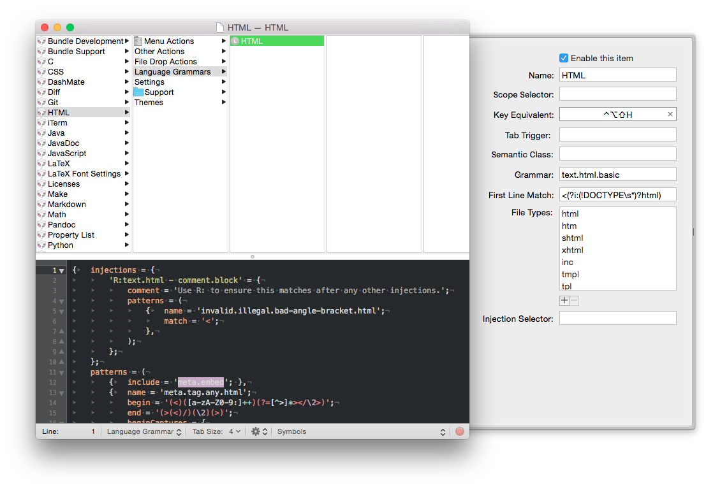
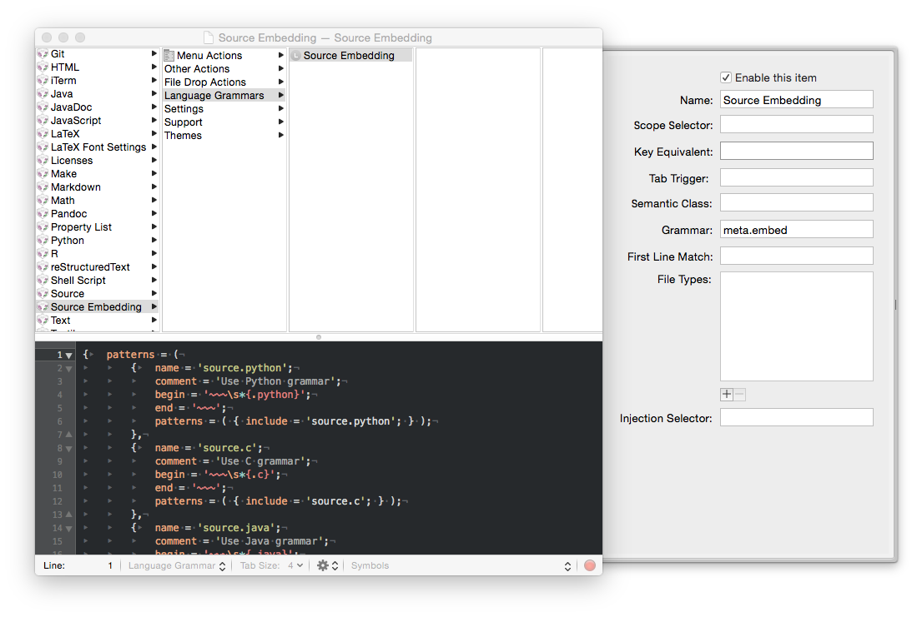

Textmate Source Embedding
Allows syntax highlighting and other features for source code embedded in text documents like HTML, MultiMarkDown, Pandoc, Markdown, etc. in TextMate.
View the Project on GitHub TimothyXu/TextMate_Source_Embedding
TextMate Source Embedding
Allows TextMate to recognise source code embedded in text markups like HTML, MultiMarkDown, Pandoc, Markdown and etc. so that syntax highlighting and other features can be achieved.
Usage
- Download ZIP
- Open Source_Embedding.tmbundle to install
- Open Bundle Editor in TextMate (Control+Option+Command+B)
- Navigate to the markup formats that you would like to use this bundle in, i.e. HTML, Markdown, Pandoc, etc.
- Navigate to Language Grammars and edit the file
- Insert the following line
{ include = 'meta.embed'; },immediately after the firstpatterns = (. (See screen shot, line 12 inserted)

- Embed source code in your text documents by writing in the following syntax, without the two backticks (\): (See screen shot)
\~~~{.python}
#Example code
def test(): pass
\~~~

- You can easily add another source language by editing the Language Grammar file of this bundle, named Source Embedding. It should be self-explanatory. (See screen shot) 
Clarification
This bundle only makes TextMate recognise source code in your text markups, it will not make such source code to be recognised and rendered correctly by your HTML/Markup parsers. HOWEVER, the brilliant utility Pandoc (and also GitHub's own markup parser) recognises the syntax used by this bundle and will render your code correctly and can output via LaTeX, HTML, EPUB, docx, and so on. This is especially convenient when combined with the Pandoc TextMate Bundle.
Licence
Please see LICENCE. Credit is due to Nick Dunn's excellent post which gave me the idea for this bundle.
Contributing
All contributions are welcomed.